Terakhir diperbarui: 11 Juli 2026
Mazduino Racedash¶
Gambaran Umum¶
Mazduino Racedash adalah dash display digital yang menampilkan data real-time dari ECU, seperti RPM, gear indicator, kecepatan, dan berbagai data sensor lainnya. Halaman ini membahas varian layar 3.5" dan 4". Untuk varian layar lebih besar (4.3", 5", dan 7"), lihat Mazduino Racedash Pro.
| Varian | Ukuran Layar | Konektor |
|---|---|---|
| Racedash 3.5" | 3.5 inch | JST 4 Pin |
| Racedash 4" (Cabus) | 4 inch | DTM4 (Deutsch DTM 4 Pin) |
Kedua varian menggunakan cara konfigurasi yang sama melalui WiFi dan browser, seperti dijelaskan pada bagian Konfigurasi di bawah.
Fitur Utama¶
- Layar digital menampilkan RPM, gear indicator, kecepatan, dan data sensor lain secara real-time
- Konfigurasi tampilan dashboard via WiFi langsung dari browser HP/laptop, tanpa aplikasi tambahan
- Mendukung komunikasi ke ECU melalui CAN Bus atau Serial, tergantung permintaan saat order dan ECU yang digunakan. ECU berbasis Speeduino wajib menggunakan mode Serial (berlaku untuk varian JST 4 Pin maupun DTM4), sedangkan rusEFI, Haltech, dan MaxxECU menggunakan mode CAN Bus
Custom Splash Screen¶
Racedash mendukung splash screen (gambar/logo) custom yang tampil saat perangkat baru menyala. Splash screen dibuat melalui Splash Screen Generator dan diunggah ke Racedash melalui WiFi.
- Buka mazduino.com/splash-generator melalui browser HP/laptop.
- Buat splash screen sesuai keinginan mengikuti instruksi pada halaman tersebut.
- Unggah hasilnya ke Racedash melalui koneksi WiFi "Mazduino_Display".
Racedash 3.5" (Konektor JST 4 Pin)¶
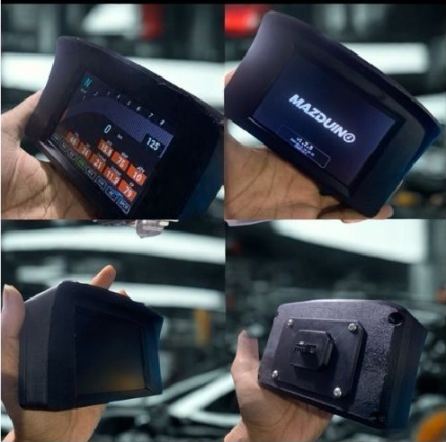
Varian ini menggunakan konektor JST 4 Pin yang ringkas untuk instalasi cepat. Tidak ada port USB yang terekspos di luar case — update firmware dilakukan secara OTA (Over-The-Air) melalui WiFi, lihat bagian Update Firmware.
Konektor JST 4 Pin (Wiring ke Kendaraan)¶
Konektor eksternal yang digunakan untuk menghubungkan Racedash ke kendaraan/ECU.
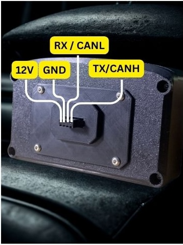
| Pin | Fungsi |
|---|---|
| 1 | 12V |
| 2 | GND |
| 3 | RX / CANL |
| 4 | TX / CANH |
Pin Header Internal PCB¶
Selain konektor JST 4 Pin, board Racedash 3.5" juga memiliki pin header internal dengan fungsi tambahan untuk mode Serial dan update firmware via USB TTL.
| Pin | Deskripsi |
|---|---|
| +12V | Power Supply 12V |
| GND | Ground |
| CANL | (CAN Mode) Hubungkan ke CANL ECU |
| CANH | (CAN Mode) Hubungkan ke CANH ECU |
| RX2 | (Serial Mode) Hubungkan ke TX Serial3 Speeduino ECU |
| TX2 | (Serial Mode) Hubungkan ke RX Serial3 Speeduino ECU |
| TXD0 | Hubungkan ke USB TTL RX (Optional) |
| RXD0 | Hubungkan ke USB TTL TX (Optional) |
Catatan:
- CANL dan CANH digunakan saat CAN Mode, sedangkan RX2 dan TX2 digunakan saat Serial Mode. Mode yang terpasang mengikuti permintaan saat order — ECU Speeduino menggunakan Serial Mode, sedangkan rusEFI, Haltech, dan MaxxECU menggunakan CAN Mode.
- +12V dan GND adalah jalur power utama.
- TXD0 dan RXD0 terhubung ke chip USB-TTL internal (CP2102N) pada PCB, namun pin ini tidak terekspos ke luar case dan hanya digunakan untuk servis/flashing di pabrik. Untuk update firmware oleh pengguna, gunakan metode OTA melalui Mazduino Flasher — lihat bagian Update Firmware.
Racedash 4" / Cabus (Konektor DTM4)¶
Tampak Depan
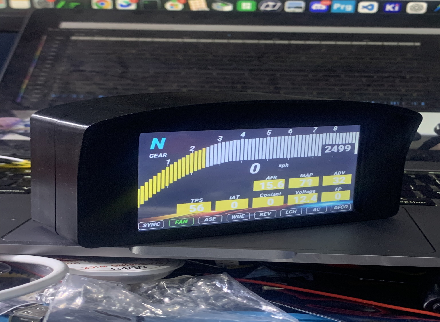
Tampak Belakang
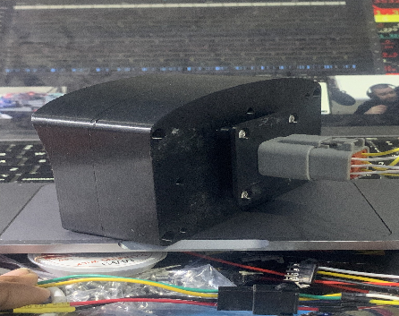
Varian ini menggunakan konektor DTM4 (Deutsch DTM 4 Pin) yang tahan getaran dan cuaca, cocok untuk aplikasi racing. Komunikasi ke ECU dilakukan melalui CAN Bus, kecuali untuk ECU Speeduino yang menggunakan mode Serial (secondary serial dari Arduino Mega).
Konektor DTM4 / 4 Pin¶

Dash connector side

Cable connector side
| No. Pin | Deskripsi |
|---|---|
| 1 | 12V Power Supply |
| 2 | Ground |
| 3 | CAN High / TX |
| 4 | CAN Low / RX |
Catatan:
- Pin 3 dan 4 berfungsi sebagai CAN High/CAN Low untuk ECU rusEFI, Haltech, dan MaxxECU (mode CAN Bus).
- Khusus untuk ECU Speeduino, pin 3 dan 4 berfungsi sebagai TX/RX Serial — Speeduino tidak memiliki CAN Bus native, sehingga data diambil melalui secondary serial (Serial3) Arduino Mega.
Update Firmware (USB atau OTA)¶
Update firmware Racedash dapat dilakukan dengan dua cara:
- USB — membuka case Racedash, lalu menghubungkan port/pin USB TTL internal ke komputer secara langsung.
- OTA (Over-The-Air) — melalui WiFi menggunakan Mazduino Flasher, tanpa perlu membuka case.
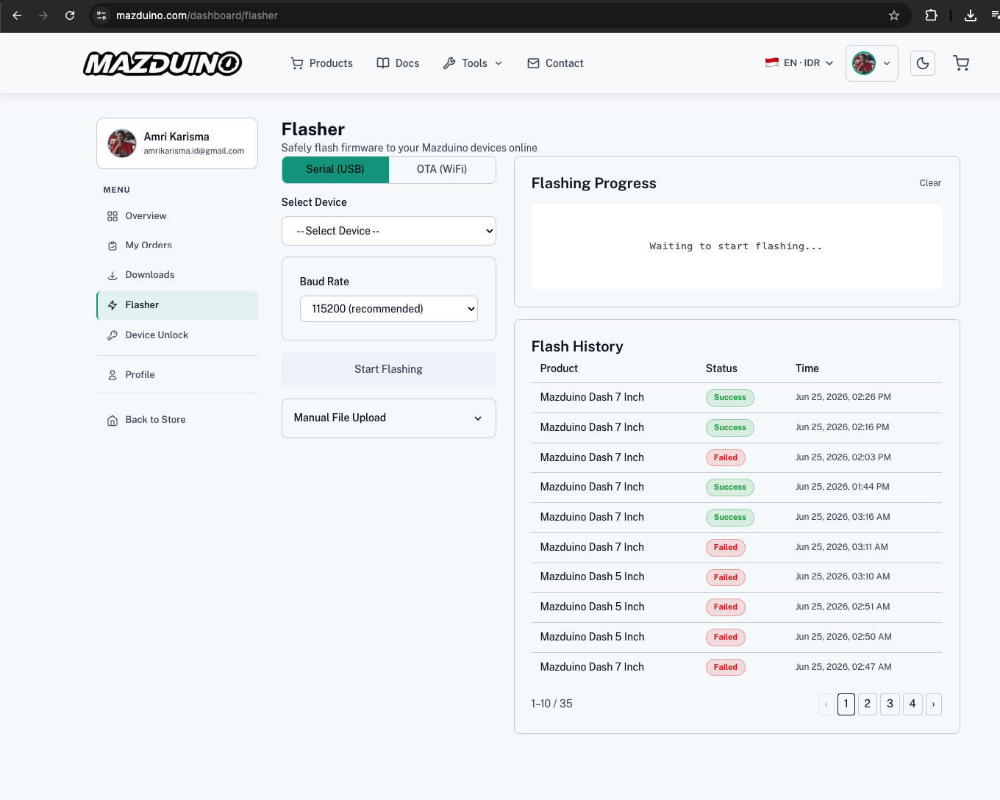
- Login terlebih dahulu ke akun Mazduino di mazduino.com, lalu buka mazduino.com/dashboard/flasher.
- Pilih tab OTA (WiFi).
- Hubungkan HP/laptop ke WiFi "Mazduino_Display" yang dipancarkan oleh Racedash, atau pastikan Racedash berada di jaringan WiFi yang sama.
- Pilih model Racedash yang sesuai pada Select Device — pastikan device dipilih dengan benar — lalu klik Start Flashing.
- Tunggu proses flashing selesai. Riwayat proses dapat dilihat pada Flash History.
Konfigurasi¶
Konfigurasi tampilan dashboard dilakukan melalui browser HP/laptop, tanpa aplikasi tambahan. Langkah ini berlaku untuk kedua varian Racedash.
Firmware Terbaru (Direkomendasikan)¶
Pada firmware terbaru, halaman konfigurasi lokal 192.168.4.1 digantikan oleh https://www.mazduino.com/display-control.
- Sebelum berpindah WiFi, buka browser dan akses https://www.mazduino.com/display-control terlebih dahulu selagi HP/laptop masih terhubung internet.
- Setelah halaman terbuka, hubungkan WiFi HP/laptop ke "Mazduino_Display" dengan password "12345678" yang dipancarkan oleh Racedash. Koneksi internet akan terputus, namun halaman yang sudah terbuka tetap dapat digunakan.
- Tunggu hingga Racedash terdeteksi otomatis pada Network Scanner. Jika tidak terdeteksi otomatis, masukkan IP Racedash secara manual pada kolom Manual IP Address: 192.168.4.1, lalu klik Test Connection.
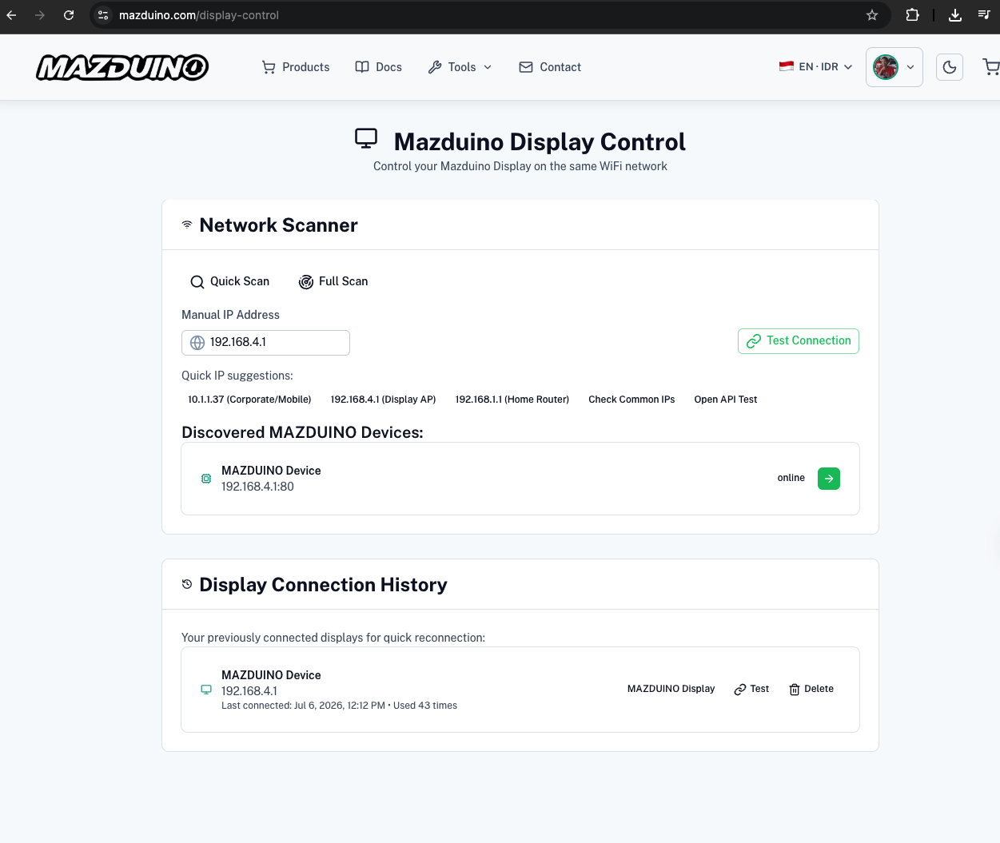
- Setelah terhubung, halaman Display Control menampilkan informasi device serta data CAN Bus/ECU secara real-time.
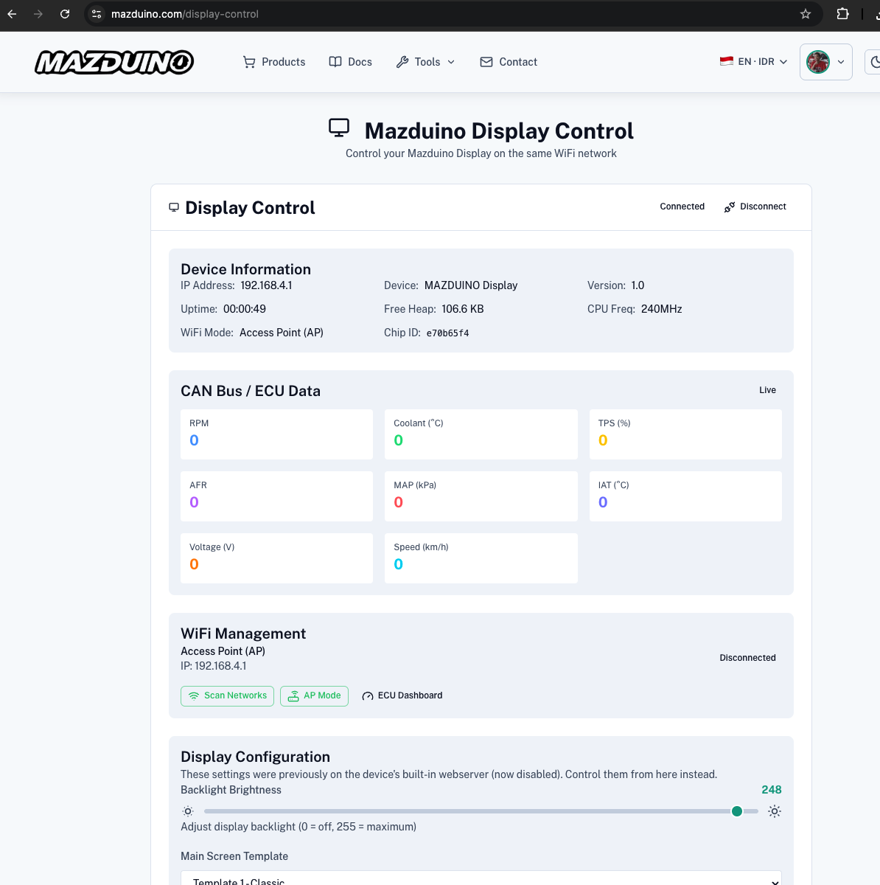
- Atur data yang ditampilkan pada tiap posisi panel, template layar, brightness, dan mode komunikasi (CAN Bus/Serial) sesuai kebutuhan pada bagian Display Configuration.
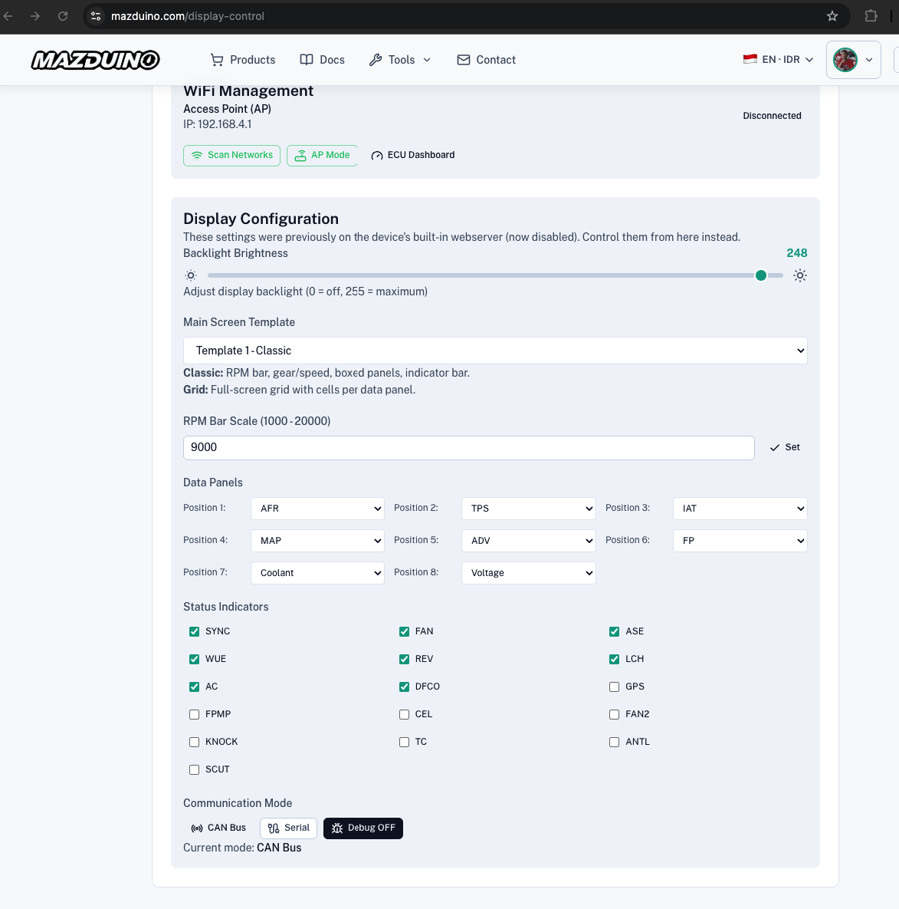
Firmware Lama / Legacy¶
Metode di bawah ini berlaku untuk firmware versi lama yang masih menggunakan halaman konfigurasi lokal di
192.168.4.1. Jika Racedash Anda sudah menjalankan firmware terbaru, gunakan metode Firmware Terbaru di atas.
- Hubungkan HP/laptop ke WiFi "Mazduino_Display" dengan password "12345678".
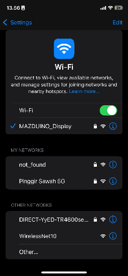
- Setelah terhubung, buka browser dan akses http://192.168.4.1.
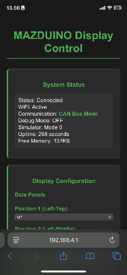
- Atur data yang ditampilkan pada tiap posisi panel sesuai kebutuhan.
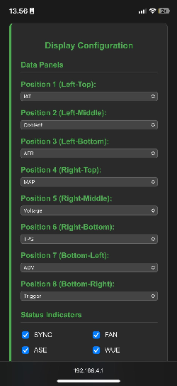
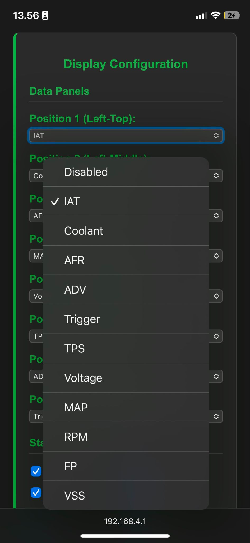
Untuk varian layar lebih besar (4.3", 5", dan 7"), lihat Mazduino Racedash Pro.
Referensi¶
- Website Mazduino - https://www.mazduino.com/
- Wiki Mazduino - https://wiki.mazduino.com/
- Github Mazduino - https://github.com/mazduino/mazduino
Jika butuh skematik dan file pendukung lainnya, tersedia di website Mazduino.